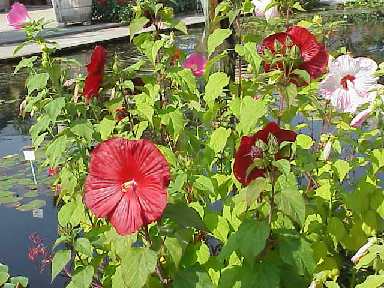
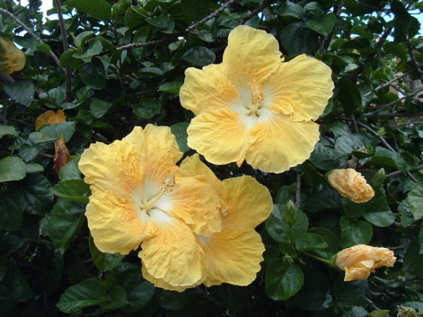

Про цветочки и не только!
Телефон: 89169996768
Почта: nimi9992@mail.ru

Всё, что вы хотели знать,
но боялись спросить,
про домашние растения!
но боялись спросить,
про домашние растения!
Про цветочки и не только!
Телефон: 89169996768
Почта: nimi9992@mail.ru
Гибискус
Описание
Листья более или менее надрезные, черешчатые. Цветки у большинства видов крупные, изящные, с ярко окрашенными венчиками. Плод в виде коробочки, распадающейся на 5 створок, заключает в себе много семян, одетых пушком или волокнами, или же гладких.
Особенности
Многие гибискусы давно разводятся в садах и оранжереях как декоративные растения, дающие красивые живые изгороди, и ради изящества их цветов. Является привлекательным комнатным растением. Требует тепло, много света и пространства. При правильной обрезке и поливке может цвести круглый год. Самый распространённый у нас в комнатной и оранжерейной культуре вид — так называемая китайская роза. Это кустарник с цветами различных цветов, как простые, так и махровые. В восточных странах считают гибискус талисманом, который помогает в делах, является хранителем дома, даёт своим хозяевам дополнительную энергию и устраняет депрессию.
